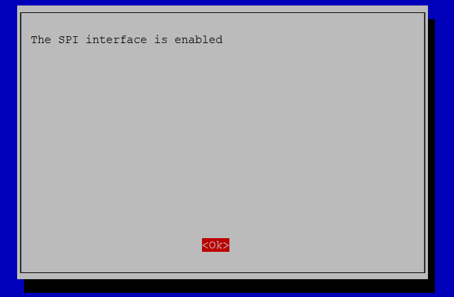

Установка акселерометра по SPI
Info
Команды в заголовке которых указано Linux выполняются в консоле PuTTY, при указании Klipper выполняются через консоль веб интерфейса.
Настройка Raspberry
Для использования GPIO портов и шин i2c, spi управляющей платы необходима дополнительная настройка.
Копируем скрипт командой
cd ~/klipper/
sudo cp ./scripts/klipper-mcu.service /etc/systemd/system/
sudo systemctl enable klipper-mcu.service
В появившемся меню для параметра Microcontroller Architecture устанавливаем Linux process

Выходим и сохраняем Q
Затем устанавливаем скомпилированный код
Активируем интерфейс SPI
Шина SPI используется для подключения акселерометра
- Запускаем конфигуратор управляющей платы
- Переходим в раздел
Interface Options

- Выбираем интерфейс
SPI

- Соглашаемся с активацией

- Выходим
Подключение акселерометра по SPI
Устанавливаем необходимые библиотеки
Устанавливаем дополнительные зависимостиsudo apt update
sudo apt install python3-numpy python3-matplotlib libatlas-base-dev libopenblas-dev
Добавляем в print.cfg
[mcu rpi]
serial: /tmp/klipper_host_mcu
[adxl345]
cs_pin: rpi:None
axes_map: x,y,-z #Порядок осей для красивого графика
[resonance_tester]
accel_chip: adxl345
probe_points:
200, 125, 50 # Точка для тестирования резонансов (центр стола)
Схемы подключения некоторых плат ADXL345:

Рекомендуемая схема подключения:
| ADXL345 пин | RasbberryPi пин | название пина RasbberryPi |
|---|---|---|
| 3V3 (or VCC) | 01 | 3V3 |
| GND | 06 | GND |
| CS | 24 | GPIO08 (SPI0_CE0_N) |
| SDO | 21 | GPIO09 (SPI0_MISO) |
| SDA | 19 | GPIO10 (SPI0_MOSI) |
| SCL | 23 | GPIO11 (SPI0_SCLK) |
Проверка акселерометра
Для проверки работы акселерометра можно получить его текущие значения. Для это нужно запустить команду ACCELEROMETER_QUERY [CHIP=<config_name>] в консоли веб интерфейса. Для стандартного названия акселерометра запустите
MEASURE_AXES_NOISE нормальными считаются значения до 100.